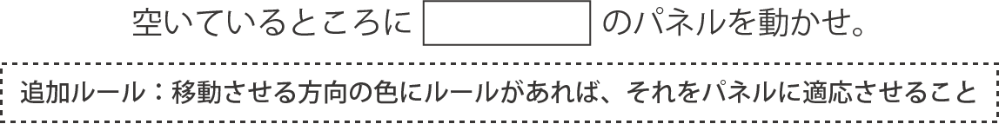
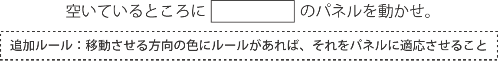

ヒントはこちら
問題の解く流れ
1.見えている8枚のパネルをもとに、6×6マスの迷路を解き進めます。2.迷路を解いて例えば「シタ」と出た場合、空いている箇所に対してその「シタ」にあるパネルを1枚スライドさせます。
3.スライドさせる際に、「シタ」にあるパネルのうち、移動させる方向のセグメントが「ブルー」だった場合は、ブルーのルールである「裏返し」をそのパネル自体に適応させます。つまりパネルは裏返しになります。（同様に、「サクライロ」だった場合は「右90度回転」、「ムラサキ」だった場合は「180度回転」）
4.迷路を解いて出る答えが方向以外の単語になるまで、1から3を繰り返します。
迷路が解けない場合
・8つのパネルのルールをすべて反映させられていますか？・読む文字数目は正しいでしょうか？
・パネルを１個前の状態にして、もう一度解いてみても良いかもしれません。
・どうしても詰まった場合は、初期配置の状態からもう一度解き直すことを推奨します。